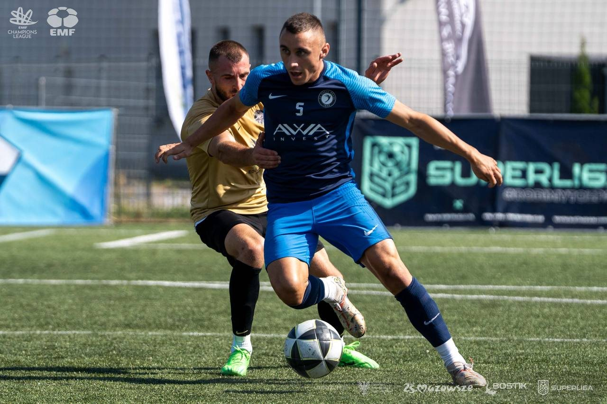
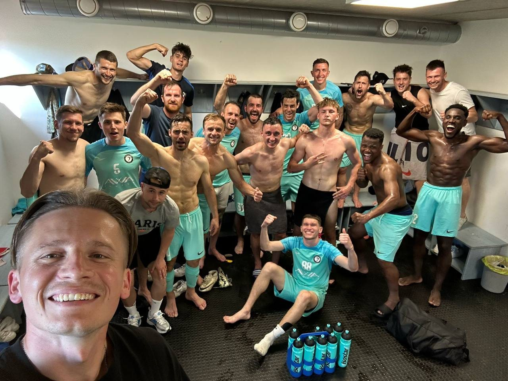
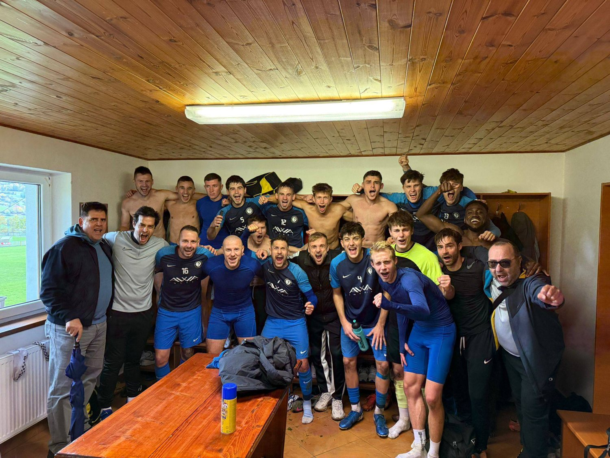
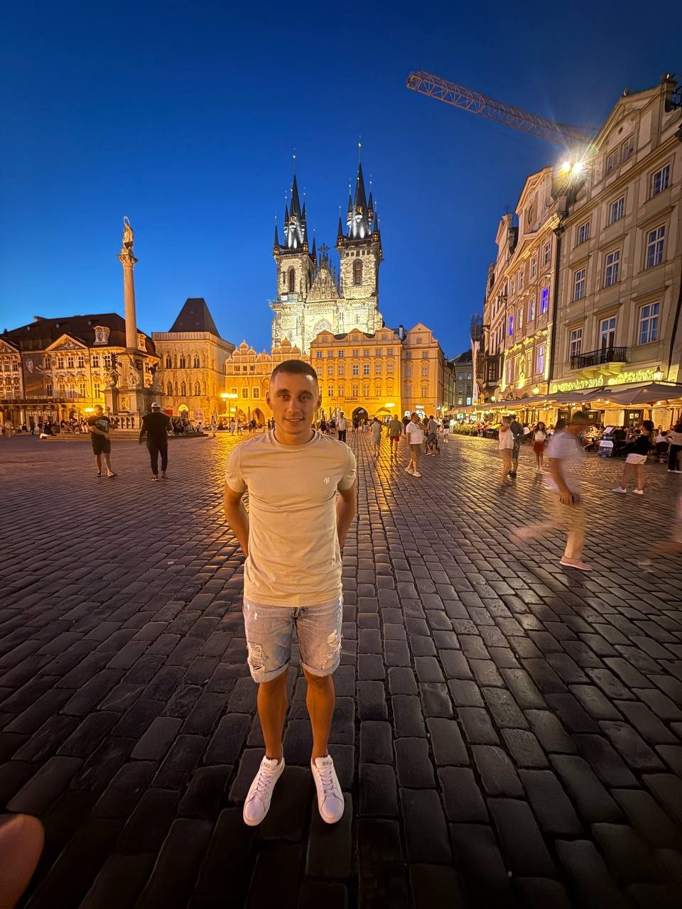
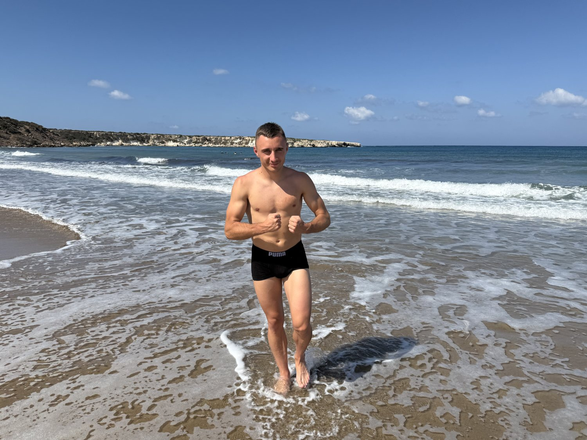
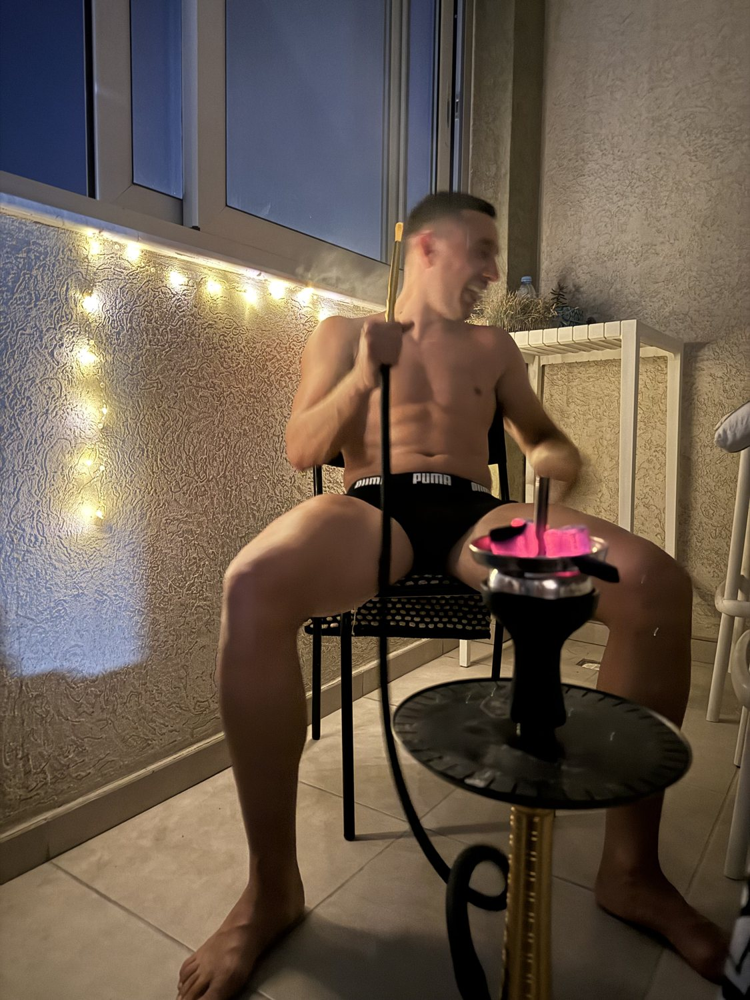

Top scorer and top assister in the same season
In 2025/26 he finished the Superliga campaign with 26 goals and 21 assists — the only player in the division to top both charts in one season. 47 goal contributions in 30 matches.
Attacking midfielder in Prague, Czech Republic. Superliga malý fotbal champion and VEKRA Superfinále winner in 2026 — plus eleven-a-side on the weekends. Football is most of the week. The rest of this page is the other part.

Totals across youth football, eleven-a-side league football and Superliga malý fotbal since 2015. Assists counted only where officially recorded.
In 2025/26 he finished the Superliga campaign with 26 goals and 21 assists — the only player in the division to top both charts in one season. 47 goal contributions in 30 matches.
1. místo Superliga Muži and 1. místo Superliga U23, both for 2025/26 — men's and under-23 titles won in the same year. Then the Superfinále on top of it.
Seven direct free-kick goals last season and 24 assists from dead balls over the last three years. If it's within 25 metres and slightly left of centre, he's taking it.
Eighteen yellows in eleven years and never sent off. For a midfielder who takes the ball in traffic every single week, staying on the pitch is its own kind of statistic.
Started at nine years old. Went from winger to the middle at fourteen and never moved again.
Three years of fundamentals. Moved inside from the wing at fourteen after a coach noticed he passed better than he dribbled. 34 goals and 29 assists across the age groups.
First competitive league football and the first winner's medal — a U19 winter cup in 2020. Finished second in the league the following season. 41 goals, 28 assists in 88 matches.
Weekend league football on grass in and around Prague. Still the number 11, still taking the free kicks, still the one dropping into the pocket to turn and pick the pass forward.
Small-sided football at national level, which suits him: tighter spaces, faster decisions, more of the ball. Won the men's and U23 titles in 2025/26 and lifted the VEKRA Superfinále in June 2026.

Carrying the ball out of midfield — the part of the game he'd play all day if someone let him.
Eleven years of football and the best parts are almost never the goals. They're the changing room twenty minutes after, when nobody wants to leave yet.
This group has been more or less the same for three seasons. Same warm-up jokes, same arguments about the playlist, same four people who are always late. When you play with the same players long enough you stop needing to look up — you already know where they'll be.
The men's title and the U23 title in 2025/26 came from the same squad. That's not depth on paper, that's a group that turned up to training in February when it was dark and freezing and nothing was decided yet.




The final day of the malý fotbal season, in front of the big screen and a very wet stage. Two cups in hand, medal round the neck, and the only photo from the whole year he actually likes.
The men's national title. 30 matches, 26 goals, 21 assists, and top of the table with two rounds still to play. His best season by every number that gets counted.
The under-23 title in the same season, won with largely the same group of players. Two league trophies, one squad, one year.
Knockout football across one weekend in June, decided on a soaked pitch under a storm. Two assists in the final, both from set pieces, and the biggest cup of the three.
The first one, and still the one that felt biggest at the time. Won the final 2–1 — scored the opener, set up the winner in the 88th minute, six goals across the tournament.

Superliga Muži on one side, Superliga U23 on the other, Superfinále in the middle. Boots off, medal between the teeth, still no idea what to say.
Not a stop on the way somewhere. The place the whole week is built around.

Every pitch I play on is within an hour of this square. Training is here, the league is here, the people are here. When someone asks where I'm from, the honest answer is: this is where my life happens.
It's a good city for someone who trains five evenings a week. Everything is close, you can walk most of it, and after a bad match there's nowhere better to clear your head than the river at eleven at night when the tourists have gone.
Winter is long and the pitches turn to mud in February. Nobody who plays here will pretend otherwise. You get used to it, and the first properly warm evening in April feels like a reward.
Football takes five evenings. Here's what happens in the gaps.

🏋️Five sessions a week, built around explosiveness rather than size. Lower body Monday and Thursday, upper Tuesday and Friday, mobility on Sunday. Never skips legs — it's the job.
FC and Warzone, mostly with the same four people since school. Career mode taken far too seriously — currently eight seasons into a save rebuilding a team from the fourth division.
Makes the pre-match playlist for the whole squad, which is a bigger responsibility than the armband. Hip-hop and afrobeats before games, something slower on the drive home.
Anyone who tells you they train five days a week and have no vices is either lying or no fun. Here are mine, honestly.

Sunday evening, lights on the balcony, two hours of not talking about football. It's the one thing that properly switches my head off after a match. Not clever, not defensible, and I'm not going to pretend it's a superfood.
Never before a match, never the night before training. But after three points, at a table with the people I just played with, a beer tastes better than it has any right to. In the off-season the rule relaxes considerably.
In season the boring version is true: no alcohol the two days before a match, in bed by eleven, five gym sessions and four team trainings a week. The photos on this page are the exception, not the routine — but they're real, and I'd rather show them than pretend.
The rest of this page is football. This part isn't.
My name is Ivan Baisa — Baisa Ivan if you're reading it the other way round. I've played football since I was nine, and most people meet me through it. But there's more to me than the number on my back.
I'm calm, I listen more than I talk, and I'm loyal to a fault — the people close to me have been close to me for years. Sport taught me discipline and how to lose properly, and both of those matter as much off the pitch as on it.
I'm looking for something real, not something casual. Someone to cook dinner with on a Sunday, travel with in the off-season, and be quiet around without it feeling awkward. Someone with her own thing going on — a career, a passion, a plan — because I have mine and I'd rather we both brought something.
If that sounds like you, message me on Instagram. I'd rather have one good conversation than a hundred matches.
Saturdays are match days from August to June, and I train five evenings a week. I will not be answering my phone. Everything else is negotiable.

Football enquiries, trials, or just a conversation — the DMs are open and I actually read them.